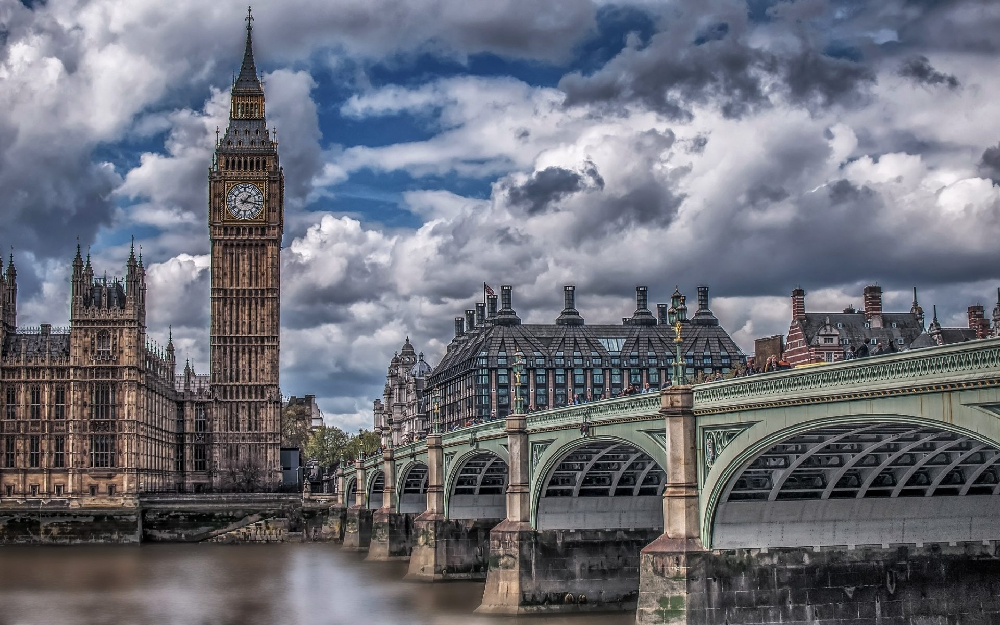
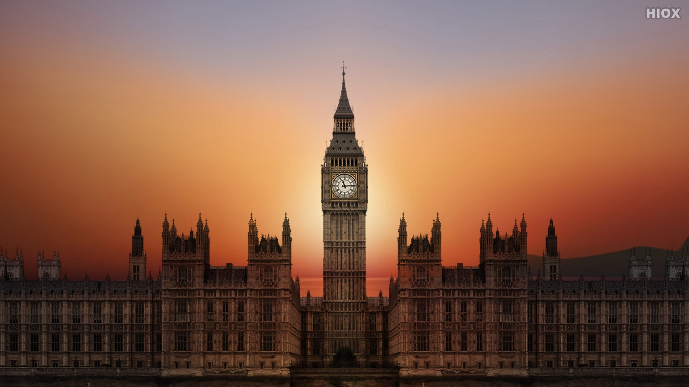

Big Ben at Day
The Elizabeth Tower is the clock tower of the Palace of Westminster in London, England.It contains the Great Clock of Westminster, a striking clock with five bells.
Big Ben at Sunset
The tower was designed by Augustus Pugin in a Perpendicular Gothic Revival style and was completed in 1859. It is elaborately decorated and includes symbols related to the four nations of the United Kingdom, the Tudor dynasty, and a Latin inscription to Queen Victoria.
Big Ben at Night
The clock uses its original mechanism and was the largest and most accurate four-faced striking and chiming clock in the world upon its completion.